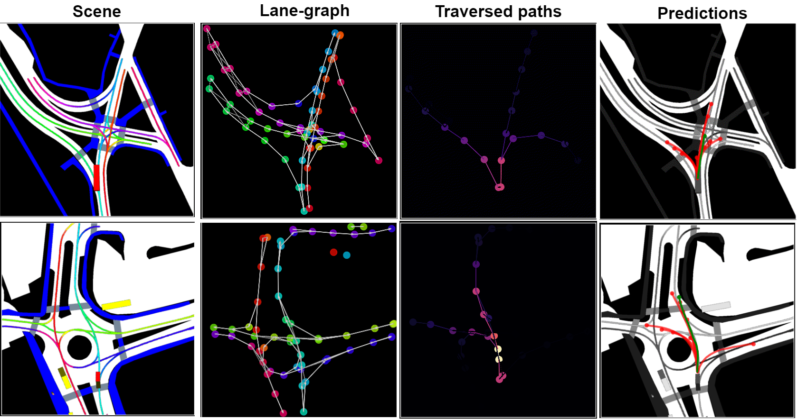
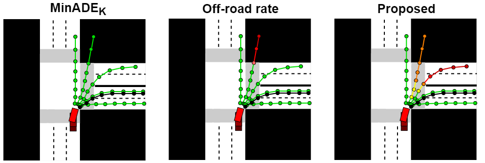
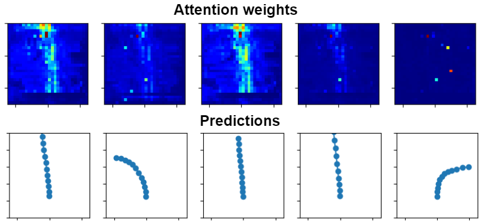
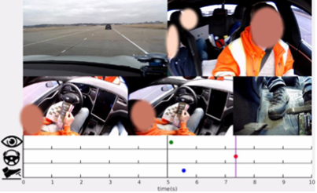
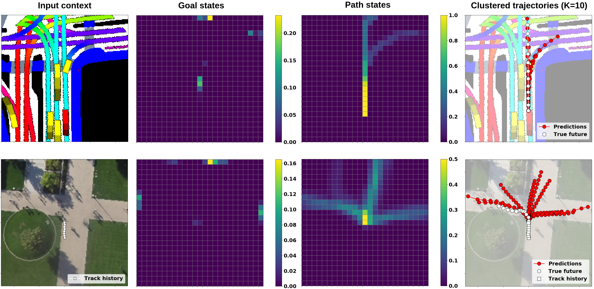
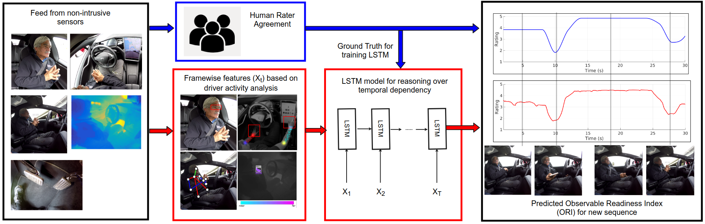
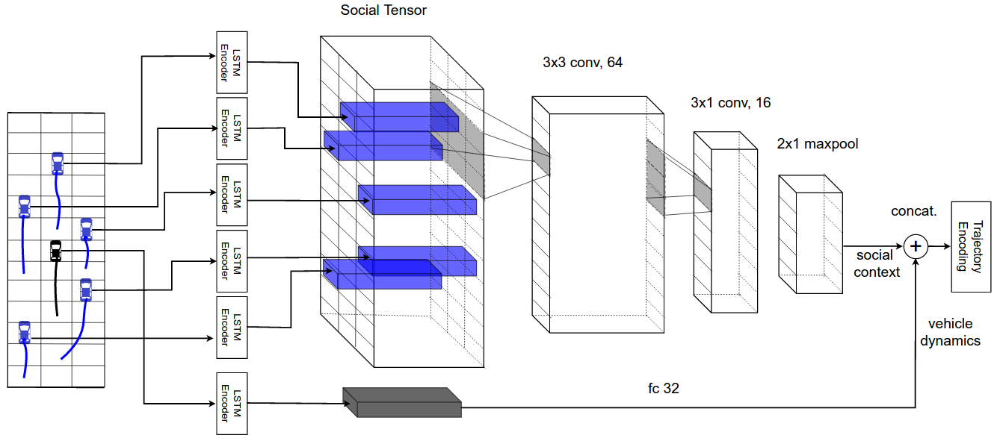

About Me
I'm a senior engineer on the prediction team at Motional where I work on machine learning models for behavior prediction and planning. I received my PhD in electrical and computer engineering from UC San Diego in 2022, where I was advised by Prof. Mohan Trivedi.
I’m broadly interested in computer vision and machine learning for autonomous driving. Specifically, my research focuses on behavior prediction models - to predict the intent and trajectories of surrounding vehicles and pedestrians, and to predict driver behavior during control transitions.
Selected Publications
Behavior prediction of intelligent agents in and around safe autonomous vehicles
Nachiket Deo
PhD Thesis, UC San Diego, 2022


Trajectory prediction in autonomous driving with a lane heading auxiliary loss
Ross Greer, Nachiket Deo, Mohan M. Trivedi
Robotics and Automation Letters (RA-L), 2021

Trajectory Prediction for Autonomous Driving based on Multi-Head Attention with Joint Agent-Map Representation
Kaouther Messaoud, Nachiket Deo, Mohan M. Trivedi, Fawzi Nashashibi
IEEE Intelligent Vehicle Symposium (IV), 2021

Predicting take-over time for autonomous driving with real-world data: data augmentation, models, and evaluation
Akshay Rangesh*, Nachiket Deo*, Ross Greer*, Pujitha Gunaratne, Mohan M. Trivedi
arXiv:2107:12932, 2021


Scene compliant trajectory forecast with agent-centric spatio-temporal grids
Daniela Ridel, Nachiket Deo, Denis Wolf, Mohan M. Trivedi
Robotics and Automation Letters (RA-L), 2020

Looking at the driver/rider in autonomous vehicles to predict takeover readiness
Nachiket Deo, Mohan M. Trivedi
IEEE Transactions on Intelligent Vehicles (T-IV), 2019
